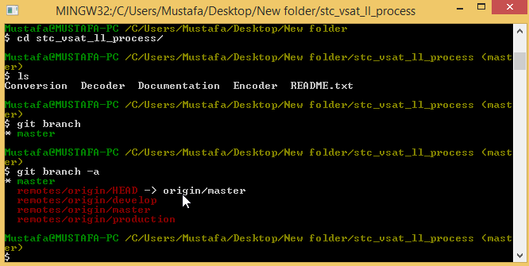

Cloning a repository only gives you the master branch (default branch)
if you try to list the local branch;
you will only see the default branch(master) and its associate remote branch remote/master
To track the other branches ,you add a local tracking branch as following
git branch

git checkout -b production origin/production
git checkout -b develop origin/develop
Right Click in the repository directory
choose git branch
Select the branch you want to switch to
Right Click in the repository directory
choose git bash
git chekcout _branch_name_
To list the log of commits
git log
To checkout a certain commit
Copy the commit id git checkout _commit_id_
git checkout _branchname_
git diff branch1_name...branch2_name
git diff production...mybranch
git diff commit_id1 commit_id2
git diff 37af96 a2da410git checkout –b __New Branch Name __git branch –d __Branch Name__